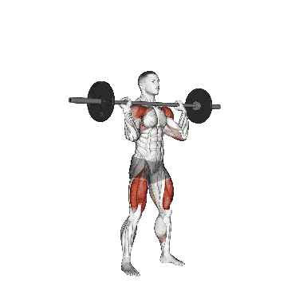

中級平均重量
一般中級訓練者的參考值。
男性
169 lb
女性
99 lb
深蹲推舉平均重量 [1RM]
| 等級 | ||
|---|---|---|
| 初學者 | 65 lb | 44 lb |
| 初級者 | 110 lb | 68 lb |
| 中級者 | 169 lb | 99 lb |
| 進階者 | 240 lb | 137 lb |
| 菁英 | 321 lb | 178 lb |
註：這些標準是以一般訓練者的 1RM 為基準估算。體重、年齡等個人因素都可能造成差異。詳細資料請參考下方表格。
深蹲推舉力量標準(lb)
男性按體重(lb)資料 [1RM]
| 體重 | 初學者 | 初級者 | 中級者 | 進階者 | 菁英 |
|---|---|---|---|---|---|
| 110 | 33 | 65 | 109 | 165 | 230 |
| 120 | 39 | 73 | 119 | 178 | 244 |
| 130 | 44 | 80 | 129 | 189 | 257 |
| 140 | 50 | 87 | 138 | 200 | 270 |
| 150 | 55 | 94 | 147 | 211 | 282 |
| 160 | 60 | 101 | 155 | 221 | 294 |
| 170 | 65 | 108 | 163 | 231 | 305 |
| 180 | 70 | 114 | 171 | 240 | 316 |
| 190 | 75 | 120 | 179 | 249 | 326 |
| 200 | 80 | 126 | 186 | 258 | 336 |
| 210 | 85 | 132 | 193 | 266 | 346 |
| 220 | 90 | 138 | 200 | 274 | 355 |
| 230 | 94 | 144 | 207 | 282 | 364 |
| 240 | 99 | 149 | 214 | 290 | 373 |
| 250 | 103 | 155 | 220 | 297 | 381 |
| 260 | 107 | 160 | 226 | 304 | 390 |
| 270 | 111 | 165 | 233 | 312 | 398 |
| 280 | 116 | 170 | 238 | 318 | 405 |
| 290 | 120 | 175 | 244 | 325 | 413 |
| 300 | 124 | 180 | 250 | 332 | 420 |
| 310 | 128 | 185 | 256 | 338 | 428 |
男性按年齡資料 [1RM]
| 年齡 | 初學者 | 初級者 | 中級者 | 進階者 | 菁英 |
|---|---|---|---|---|---|
| 15 | 55 | 93 | 144 | 205 | 273 |
| 20 | 63 | 107 | 164 | 234 | 313 |
| 25 | 65 | 110 | 169 | 240 | 321 |
| 30 | 65 | 110 | 169 | 240 | 321 |
| 35 | 65 | 110 | 169 | 240 | 321 |
| 40 | 65 | 110 | 169 | 240 | 321 |
| 45 | 62 | 104 | 160 | 228 | 304 |
| 50 | 58 | 98 | 150 | 214 | 286 |
| 55 | 54 | 90 | 139 | 198 | 264 |
| 60 | 49 | 82 | 127 | 181 | 241 |
| 65 | 44 | 74 | 115 | 163 | 218 |
| 70 | 40 | 67 | 103 | 147 | 196 |
| 75 | 35 | 60 | 92 | 131 | 175 |
| 80 | 32 | 53 | 82 | 117 | 156 |
| 85 | 28 | 48 | 74 | 105 | 140 |
| 90 | 26 | 43 | 66 | 95 | 126 |
女性按體重(lb)資料 [1RM]
| 體重 | 初學者 | 初級者 | 中級者 | 進階者 | 菁英 |
|---|---|---|---|---|---|
| 90 | 33 | 54 | 81 | 115 | 152 |
| 100 | 35 | 57 | 85 | 120 | 158 |
| 110 | 38 | 60 | 89 | 124 | 163 |
| 120 | 40 | 63 | 93 | 128 | 167 |
| 130 | 42 | 66 | 96 | 132 | 172 |
| 140 | 44 | 68 | 99 | 136 | 176 |
| 150 | 46 | 71 | 102 | 139 | 180 |
| 160 | 48 | 73 | 105 | 142 | 183 |
| 170 | 50 | 75 | 107 | 145 | 187 |
| 180 | 51 | 77 | 110 | 148 | 190 |
| 190 | 53 | 79 | 112 | 151 | 193 |
| 200 | 55 | 81 | 114 | 153 | 196 |
| 210 | 56 | 83 | 117 | 156 | 199 |
| 220 | 57 | 85 | 119 | 158 | 202 |
| 230 | 59 | 86 | 121 | 161 | 204 |
| 240 | 60 | 88 | 123 | 163 | 207 |
| 250 | 62 | 90 | 125 | 165 | 209 |
| 260 | 63 | 91 | 126 | 167 | 212 |
女性按年齡資料 [1RM]
| 年齡 | 初學者 | 初級者 | 中級者 | 進階者 | 菁英 |
|---|---|---|---|---|---|
| 15 | 37 | 58 | 85 | 116 | 151 |
| 20 | 43 | 66 | 97 | 133 | 173 |
| 25 | 44 | 68 | 99 | 137 | 178 |
| 30 | 44 | 68 | 99 | 137 | 178 |
| 35 | 44 | 68 | 99 | 137 | 178 |
| 40 | 44 | 68 | 99 | 137 | 178 |
| 45 | 41 | 65 | 94 | 130 | 169 |
| 50 | 39 | 61 | 89 | 122 | 158 |
| 55 | 36 | 56 | 82 | 113 | 146 |
| 60 | 33 | 51 | 75 | 103 | 134 |
| 65 | 30 | 46 | 68 | 93 | 121 |
| 70 | 27 | 42 | 61 | 83 | 108 |
| 75 | 24 | 37 | 54 | 75 | 97 |
| 80 | 21 | 33 | 48 | 67 | 87 |
| 85 | 19 | 30 | 43 | 60 | 78 |
| 90 | 17 | 27 | 39 | 54 | 70 |
註：一般健身房的標準槓鈴通常為44 lb。
目標肌群
| 分類 | 肌群 |
|---|---|
| 主動肌 | 股四頭肌, 臀大肌, 三角肌 |
| 輔助肌群 | 腿後肌群, 肱三頭肌, 腹外斜肌 |
| 穩定肌群 | 腹直肌, 斜方肌 |
| 握力 | 前臂伸肌群 |
用 Shiba App 記錄與分析
集中查看重量、次數與進步變化。
表格說明
| 等級 | 說明 | 分布 |
|---|---|---|
| 初學者 | 掌握正確動作，並持續訓練至少 1 個月。 | 後 5% |
| 初級者 | 持續規律訓練至少 6 個月。 | 前 80% |
| 中級者 | 持續規律訓練至少 2 年。 | 前 50% |
| 進階者 | 持續規律訓練超過 5 年。 | 前 20% |
| 菁英 | 針對該動作專項訓練超過 5 年。 | 前 5% |